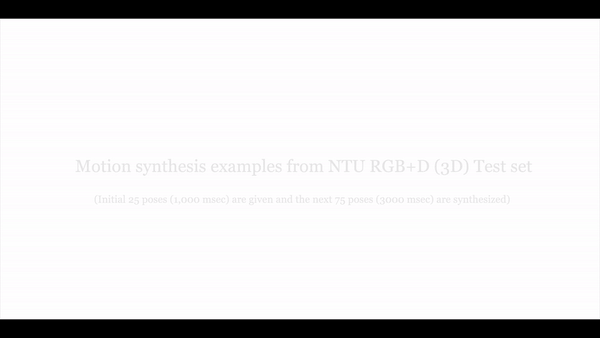

GlocalNet: Class-aware Long-term Human Motion Synthesis
Neeraj Battan*, Yudhik Agrawal*, Sai Soorya Rao Veeravalli, Aman Goel, Avinash Sharma
CVIT Lab,
International Institute of Information Technology, Hyderabad
WACV 2021, Waikoloa, Hawaii, USA
Using the same set of sparse initial poses, our method can generate differents type of activities based on the input class label.
The figure depicts two such activities - Drinking and Standing up that were synthesized from the same set of initial poses.

T-SNE plot of GloGen embedding subspace along with the plot of selected motion trajectories where multiple samples for different classes are represented as color-coded 3D points.
Our method is also capable of transitioning across actions. Figure demonstrates the transition from Standing Up to Drinking activity.
Abstract
Synthesis of long-term human motion skeleton sequences is essential to aid human-centric video generation with potential applications in Augmented Reality, 3D character animations, pedestrian trajectory prediction, etc. Long term human motion synthesis is a challenging task due to multiple factors like, long-term temporal dependencies among poses, cyclic repetition across poses, bi-directional and multi-scale dependencies among poses, variable speed of actions, and a large as well as partially overlapping space of temporal pose variations across multiple class/types of human activities. This paper aims to address these challenges to synthesize a long-term (> 6000 ms) human motion trajectory across a large variety of human activity classes (> 50). We propose a two-stage activity generation method to achieve this goal, where the first stage deals with learning the long-term global pose dependencies in activity sequences by learning to synthesize a sparse motion trajectory while the second stage addresses the generation of dense motion trajectories taking the output of the first stage. We demonstrate the superiority of the proposed method over SOTA methods using various quantitative evaluation metrics on publicly available datasets.
Citation
@inproceedings{ ,
title = {GlocalNet: Class-aware Long-term Human Motion Synthesis},
author = { },
booktitle = {{ } Winter Conference of Applications on Computer Vision (WACV)},
month = {jan},
organization = {{ }},
year = {2021},
}